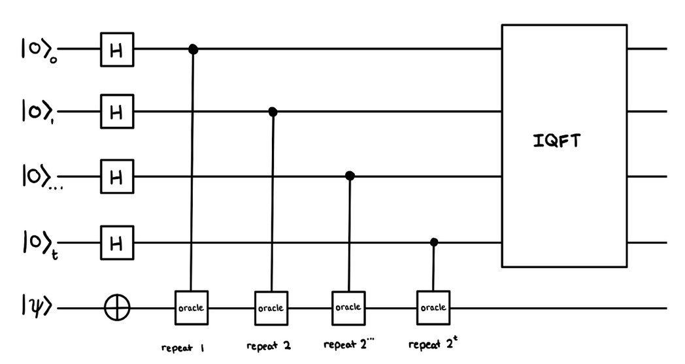

In 2021, I had the wonderful opportunity to take part in the Beaver Works Summer Institute (BWSI) Quantum Software program. For the first two weeks of the program, I learned about quantum algorithms and computing. The final two weeks were spent conducting an intensive collaborative project researching and implementing a quantum algorithm. My group members, Aaron and Alina, and I chose to study quantum phase estimation (QPE). Check out our video presentation and our GitHub repository.
What is QPE?
QPE is a quantum algorithm used to estimate a qubit's eigenvalue given an eigenvector and the unitary operation it has been affected by (eg. rotation). It is often used as a subroutine in other quantum algorithms such as HHL and Shor's algorithm.
Coding Process
First, we coded QPE in Q#, a language used to simulate qubits. We ran unit tests on multiple unitary operations such as rotations and their controlled variants. After confirming that our implementation of QPE worked, we migrated it to Python. Using the Qiskit library and IBM's quantum machines, we were able to implement and run our algorithm on actual quantum computers. Below is a circuit diagram of our implementation of QPE.
Verdict
QPE is not practical for smaller quantum systems but is for larger, less error-prone ones. As the number of qubits and quantum volume increases in quantum computers, QPE's accuracy and precision will also increase, making it one of the fundamental "building block" algorithms of the quantum world.
Challenges
Understanding quantum papers is difficult. Initially we had trouble learning and understanding how eigenvalues, eigenvectors, and other mathematical concepts applied to QPE. Endianness discrepancy between papers caused us to initially implement QPE incorrectly. Unfortunately we were not able to run our algorithm on large quantum computers so some of our conclusions are speculative.
Acknowledgements
Thank you to BWSI, our instructors: Joe and Richard, and our TAs: Filip, Mridul, and Christopher for putting together and guiding this program. None of this would have been possible otherwise.